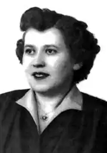

Леся Храплива-Щур — є відомою українською письменницею діаспори в Канаді, журналістом, педагогом, пластункою.
Народилася 27 травня 1927 року у Львові. Мати – гімназійна вчителька Євгенія Петрик, батько – Євген Храпливий, директор Крайового Товариства "Сільський господар", інженер-агроном, професор, відомий громадський діяч. Вчилася у народній школі ім. Т. Шевченка по вул. Мохнацького (Драгоманова), була ученицею Констянтини Малець. У 1939 р. вступила до гімназії українського педагогічного товариства Кокорудзів. З 1941 р. навчалася у першій українській гімназії у Львові. У 1944 році сімнадцятилітньою дівчиною разом із батьками виїхала з України в Німеччину, де поселилася в місті Ерлянгені (Баварія). Там студіювала медицину та біологію (1945-49), а навчання продовжила у Нью-Йорку в Колумбійському університеті (1951-53). Близько 15 років працювала у лабораторіях. З 1954 р. вивчала україністику при Інституті Наукового Товариства імені Т. Г. Шевченка, а від 1956 р. працювала у цьому закладі як асистент, опісля, як лектор української літератури. Переїхавши до Канади, продовжила займатися літературною, педагогічною та громадською діяльністю: викладала на курсах українознавства, організовувала суботні школи, де вчила дітей співати і танцювати, допомагала у церковних справах, опікувалася поширенням українських видань у світі, перевиданнями та пересилкою їх до шкіл та бібліотек в Україну. Часто письменниця друкувала у пресі статті на тему літератури для дітей, вважаючи, що саме "…книжка готує дитину вже від наймолодшого віку до читання та належного сприймання написаного. Чим ретельніше підготовлена до нього людина, тим краще зуміє сприймати скарби літератури свого народу і з’єднатися зі своєю національною спадщиною". З 1988 року Леся Храплива працювала у Світовій Координаційній Виховно-Освітній Раді при Світовому Конгресі Вільних Українців, де взяла на себе редагування бюлетеня для освітян "Відгукніться!". З 1996-го по 1999-й очолювала Об’єднання Працівників Літератури для Дітей і Молоді (ОПЛДМ). Ще у Львові у 1942 році Леся вступила в організацію "Пласт", продовжила свою діяльність у Німеччині, де організувала Курінь Уладу Старших Пластунок "Лісові Мавки" і у Нью-Йорку, де стала Крайовою коменданткою пластунів (1958-60), організовувала вишколи для новаків і виховників, різноманітні заняття, прогулянки, табори, була автором ігрових комплексів. Окрім цього, вела сторінку "Пластова Ватра" у "Свободі" (1954-1956), видавала пластовий бюлетень "Іскра Сокільської Ватри" (1950-1954). 16 років працювала редактором журналу для малят "Готуйсь", який виховав не одне покоління українців на чужині. У 1992 році бере участь у Світовому Форумі України у Києві, на Першому Світовому Конгресі Християн греко-католицької церкви у Львові, виступає з доповіддю: "Християнська родина. Роль у ній жінки". Бере участь у перепохованні тлінних останків кардинала Йосифа Сліпого, у відкритті пам’ятника Тарасові Шевченку, у нарадах Наукового товариства ім. Т. Шевченка, 50-літті УПА. Літературна творчість письменниці охоплює багато книжок для дітей і молоді, статті, оповідання, вірші. З прозових – це збірка оповідань "Вітер з України", захоплюючі повісті "Козак Невмирака" (Торонто, 1987), "Отаман Воля" — про життя, побут і працю українських емігрантів в Америці, оповідання "Чародійне авто". З поетичних — книжка-декламатор "На ввесь Божий рік" (Нью-Йорк, 1964 р.) з витинанками самої авторки. Тут і вірші про Русь-Україну, про Тараса Шевченка, Лесю Українку, Маркіяна Шашкевича, Ольгу Басараб, Євгена Коновальця, Симона Петлюру, Тараса Чупринку, Андрея Шептицького. Віддзеркалені побут, звичаї, пісні, народний одяг України. Чудова збірка для найменших читачів "Писанка українським дітям", яка вийшла двома виданнями на чужині й третім — у Києві, в чудовому мистецькому оформленні видатного українського художника в еміграції Петра Андрусіва. Для дорослого читача видано збірку віршів "Далеким і близьким". Книжка "Українські народні звичаї в сучасному побуті" (зі словничком українських імен) декілька разів перевидавалася в Україні, стала своєрідним підручником із народознавства в перші роки незалежності. Укладач О. О. Сачинська